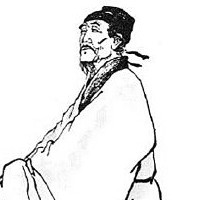

在杜甫中年因其诗风沉郁顿挫，忧国忧民，杜甫的诗被称为“诗史”。他的诗词以古体、律诗见长，风格多样，以“沉郁顿挫”四字准确概括出他自己的作品风格，而以沉郁为主。杜甫生活在唐朝由盛转衰的历史时期，其诗多涉笔社会动荡、政治黑暗、人民疾苦，他的诗反映当时社会矛盾和人民疾苦，他的诗记录了唐代由盛转衰的历史巨变，表达了崇高的儒家仁爱精神和强烈的忧患意识，因而被誉为“诗史”。杜甫忧国忧民，人格高尚，有吏夜捉人诗艺精湛。杜甫一生写诗一千五百多首，其中很多是传颂千古的名篇，比如“三吏”和“三别”，并有《杜工部集》传世；其中“三吏”为《石壕吏》《新安吏》和《潼关吏》，“三别”为《新婚别》《无家别》和《垂老别》。杜甫流传下来的诗篇是唐诗里最多最广泛的，是唐代最杰出的诗人之一，对后世影响深远。杜甫作品被称为世上疮痍，诗中圣哲；民间疾苦，笔底波澜。
盛唐诗韵，以介绍唐朝数位著名典型诗人为主题的一个网页作品。本站以黑白简约典雅的风格设计主要介绍到了唐朝诗人李白、杜甫、王维、贺知章、孟浩然等。有什么不足之处欢迎大家批评指出！
- 
杜甫，字子美.
自号少陵野老，盛唐时期伟大的现实主义诗人。他忧国忧民，人格高尚，诗艺精湛，被后世尊称为“诗圣”，他的诗也被称为“诗史”。杜甫与李白合称“李杜”。